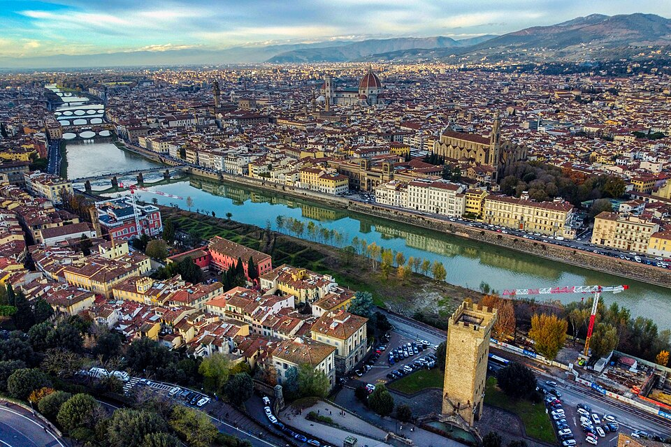

Lugares mais visitados
- Roma – Capital do país, com o Coliseu, Vaticano e Fontana di Trevi.
Próxima do mar Mediterrâneo, Roma apresenta clima típico dessa região, sendo marcada ainda por um relevo
modesto com altitudes que não ultrapassam 140 metros. A economia de Roma tem como alicerce o setor de
comércio e serviços, com destaque para o turismo. A cidade recebe milhões de turistas todos os anos, atraídos
pelos registros da Roma Antiga e pelos elementos que expressam seus costumes contemporâneos. - Veneza – Conhecida por seus canais e gôndolas.
- Florença – Berço do Renascimento, com obras de Michelangelo e Da Vinci.
- Milão – Centro da moda e da economia.
- Nápoles e Costa Amalfitana – Cultura vibrante e belas praias.
- Pisa – Famosa pela Torre inclinada.
- Cinque Terre – Vilarejos coloridos à beira do mar.


